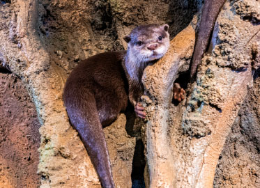

<!DOCTYPE html>
<html lang="en">
<head>
    <meta charset="UTF-8">
    <meta name="viewport" content="width=device-width, initial-scale=1.0">
    <title>Document</title>
</head>
<body>
    
</body>
</html>
<style>
ul{
    list-style-type: none;
    padding: 15px;
    margin: 0px;
    background-color: black;
    overflow: hidden;
    
}
a{
    color: antiquewhite;
    width: 150px;
    font-size: 25px;
    font-weight: bold;
    text-decoration: none;
    padding: 10px;
    display: block;
    text-align: center;
    border-right: 2px dashed;

}
a:hover{
    background-color: navy;
}
li{
    float: left;
}
h1{
    color: antiquewhite;
    text-align: center;
    font-size: 75px;
}
body{
    background-color: black;
}
h2{
    color: white;
    text-align: center;
    font-size: 40px;
}
p{
    font-size: 25px;
    text-align: center;
}
a {
text-decoration: none;
display: inline-block;
padding: 8px 16px;
}

a:hover {
background-color: #ddd;
color: black;
}

.previous {
background-color: #f1f1f1;
color: black;
}

.next {
background-color: #04AA6D;
color: white;
}

.round {
border-radius: 50%;
}
</style>
<body>
    <body>
        <header>
            <ul>
               <li> <a href="Home Page.html" target="_blank">Home</a> </li>
        <li> <a href="Visit Us.html" target="_blank"> Visit us </a> </li>
       <li>  <a href="Explore Aqua.html" target="_blank">Explore Aqua </a> </li>
       <li><a href="Experiences.html" target="_blank">Experiences</a> </li>
        <li> <a href="Education.html" target="_blank">Education</a> </li>
       <li> <a href="Aqua Mall.html" target="_blank">Aqua Mall</a> </li>       
            </ul>
        </header>
            <h1> Animal Encounters</h1>
            <br>
            <h2>
               "OTTER ENCOUNTER"
            </h2>
            <h2>
            Aqua Marine is home to a family of Asian small-clawed otters.
                <BR>
                    <BR>
                        
                        <br>
        
        <p>
            This species of otters is the smallest of all 13 otter species and is native to Asia. Visitors can go behind the scenes for an exclusive tour of the otters’ home in the Aqua Marine and can interact with these cute and charismatic animals. There is also a special educational presentation on otters.
            <br>
            <br>
            The Asian small-clawed Otter, a highly threatened species, is the smallest breed of Otter in the world, weighing less than 5 kilograms. Carnivorous in nature, they live in streams, rivers, marshes, and rice patties and feed on crustaceans, snails, fish, and insects. Otters have a huge appetite and can eat up to 20% of their body weight daily. They are intelligent animals and great at using tools such as pick up rocks and using it to break open shellfish.
        <br>
        <br>
        <a href="animal2.html" class="previous">&laquo; Previous</a>
        <a href="animal4.html" class="next">Next &raquo;</a>
        
        </p>
            </h2>
        
    </body>
    </html>